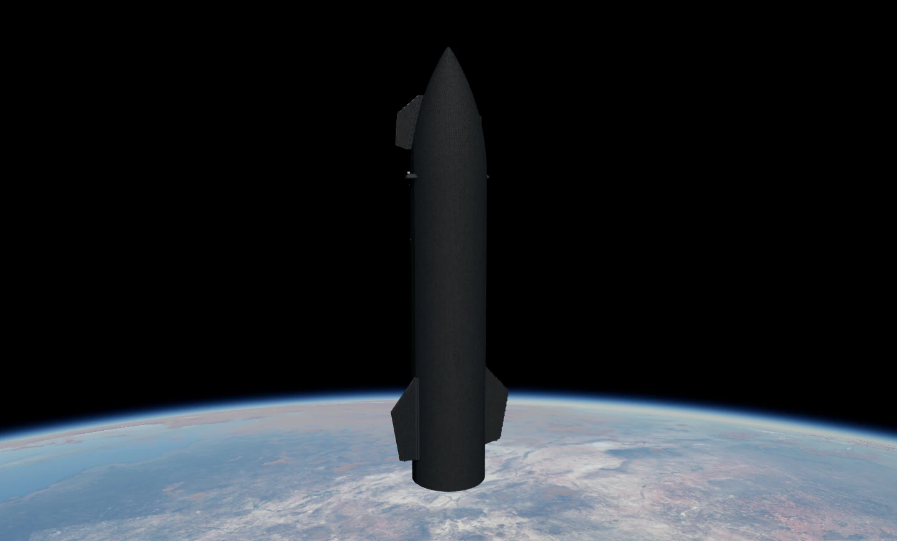
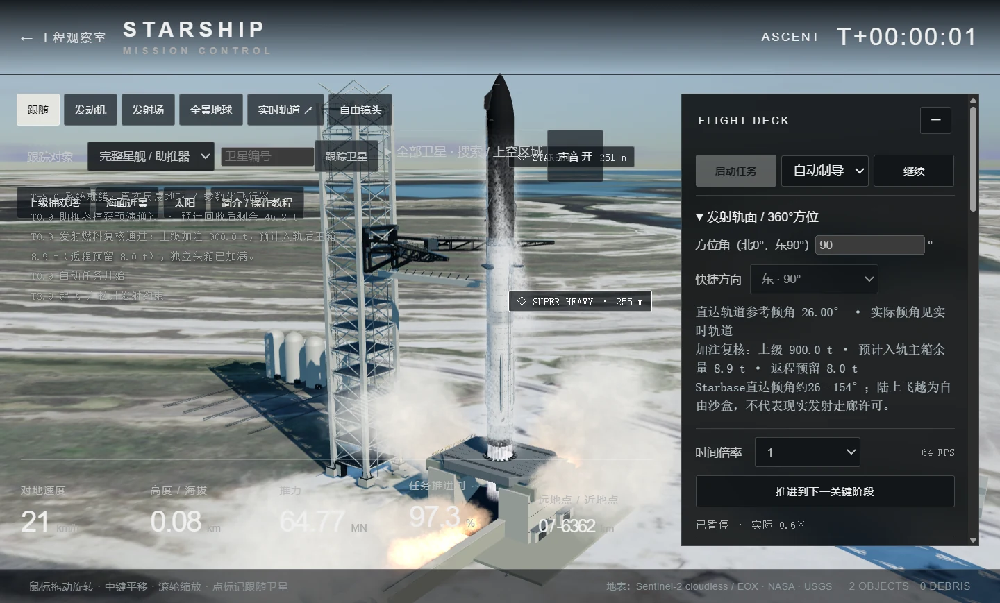

拆开一台发动机
在工程观察室旋转、剖切或展开猛禽模型。选中一个部件，沿流动示意查看泵、阀门和相邻管路的关系。

MISSION
在工程观察室旋转、剖切或展开猛禽模型。选中一个部件，沿流动示意查看泵、阀门和相邻管路的关系。
设定发射方位，观察起飞、热分离和卫星部署。近景与全球视角共享任务时钟和飞行状态，可以随时切换。地球自转、公转和昼夜光照随存档时间推进。
卫星逐批释放、展开太阳能板并升轨。按飞越的国家或地区挑选目标，使用时间加速或跳到下一关键阶段，继续后续发射。远景卫星采用批量绘制，选中目标后可近看模型。
部署后选择塔架捕获或地图落点。跟随飞船穿过再入辉光，再到场区观看运输、重装和加注，霜线沿贮箱逐渐抬升。
IN FLIGHT

SYSTEM
Windows 10 / 11 x64、.NET Framework 4.8、Microsoft Edge WebView2，以及支持硬件加速 WebGL 2 的显卡与驱动。
保留压缩包再解压，建议预留 2 GB 磁盘空间。最低 CPU、内存和显卡型号尚未实机测定。
已实测的笔记本配置为 Core i9-14900HX、32 GB 内存、GeForce RTX 4060 Laptop GPU。
在 1080 × 688 的发射场近景，白雾开启时测得中位帧时间 29.2 毫秒，约合 34 FPS。分辨率、镜头距离和任务规模都会影响表现。
完整解压 ZIP，双击 Starship Flight Lab.exe。进入工程观察室查看结构，或打开任务模拟，选定发射方位后点击「启动任务」。如果系统提示缺少运行环境，可安装 微软 WebView2 ↗。